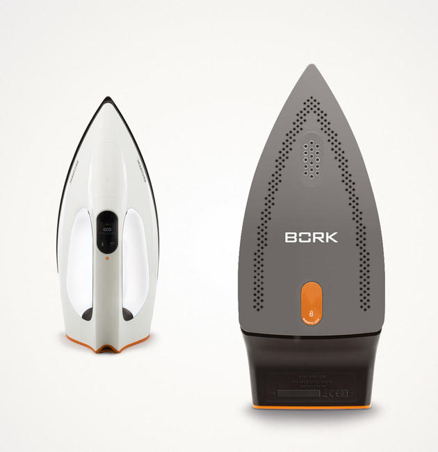
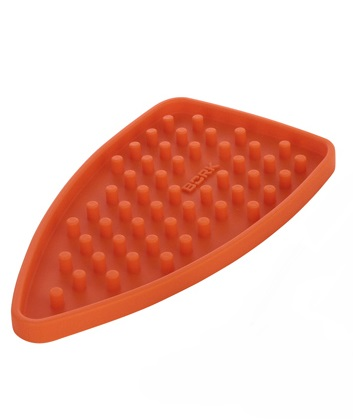
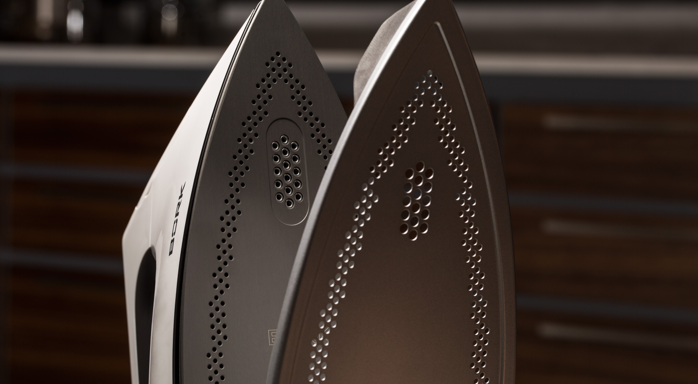
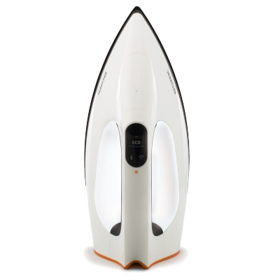

Утюг BORK I780
Первый утюг со встроенным парогенератором, обладающим мощным паровым ударом Сверхкомактная помпа нового поколения позволяет использовать паровой удар для разглаживания заломов, пересушенных тканей и других проблемных мест. Просто в процессе глажки нажмите на курок, и утюг выдаст максимальное количество пара для решения вашей проблемы.
Самая тихая помпа с бесперебойной подачей пара
Работа I780 сопровождается мягким звуком работы помпы не вызывая неприятных эмоций
Высококонтрастный LCD дисплей с русскоязычным меню.
Впервые в утюге применен информативный дисплей с индикацией вида ткани. Это выводит использование прибора на новый уровень. Больше нет необходимости гладить, какой режим необходимо использовать, нужно просто выбрать тип ткани и гладить, не опасаясь за результат.
Возможность выбора языка английский, русский или использование символов.
Система контроля парообразования TOUCH INTELLIGENT
Утюг рекомендует максимальную подачу пара при различных видов ткани.
2600 Вт
Мгновенный результат за считанные секунды.
Благодаря высокой мощности, процесс нагрева подошвы происходит очень быстро.
Несколько секунд и утюг готов к работе.
ANODIUM - сверхпрочное покрытие, обеспечивающее идеальное скольжение

При глажке изделий ткань не сборит, не образуются заломы. Если произойдет контакт с металлической фурнитурой, подошва не поцарапается.
Материалы подошвы – сплав алюминия и магния
Это лучшее решение, благодаря которому подошва утюга очень легкая и быстро нагревается.
Подсветка
Элегантная подсветка служит не только индикатором работы но и показывает уровень воды в резервуаре утюга.
Силиконовая переносная подошва
Теперь вы сможете хранить утюг в любом месте, не переживая что он повредит поверхность.
Неважно, как раскалена подошва, просто положите утюг на специальную силиконовую подставку.
Стальная насадка на магните
Легким движением руки, насадка надевается и снимается с подошвы.
Насадка крепится на магните, что позволяет легко крепить ее на утюг и в то же время она очень крепко держится.
Насадка дает 100% уверенность в том, что Вы не оставите следов на ткани.
Для того чтобы отгладить стрелки на шерстяных брюках необходимо два фактора:
- Сильный пар, чтобы стрелки держались.
- Низкая температура подошвы, чтобы не остался блеск.
Используя насадку, Вы получаете максимальный пар при низкой температуре подошвы.
Система безопасности
Автоотключение
Утюг автоматически отключается если неподвижно стоит 8 мин. в вертикальном положении или 30 сек. в вертикальном положении.
Автодиагностика
Первый утюг с режимом автодиагностики. Индикация кодов ошибок и неисправностей.
Система безопасности
Переведет утюг через 60 сек. в режим без пара, если закончится вода. Подсветка будет моргать, показывая что вода закончилась.
Самоочистка без вашего участия
Утюг не надо держать над раковиной и ждать окончания процесса самоочистки. Все намного проще! Удерживайте сенсор переключения температуры для включения функции самоочистки, поставьте утюг вертикально, положите поддон под подошву и можете заниматься своими делами.
Технические характеристики
Мощность 2200-2600 Вт
Подача пара до 60г/мин
Паровой удар 235 г/мин
Емкость для воды 330 мл
Длина кабеля 2.5 м
Вес 1.76 кг
Срок гарантии 1 год
Страна производства Китай